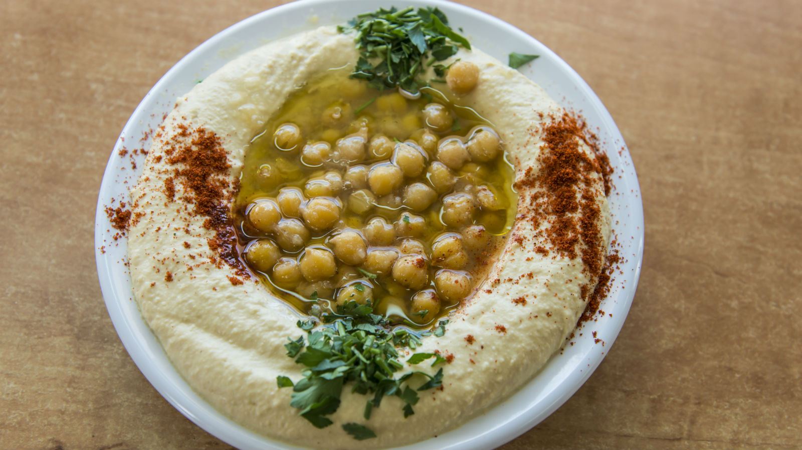

Hamus

Hummus III
Hummus is a pureed garbanzo bean dip with Middle Eastern origins. Serve with pita and an assortment of fresh vegetables. This is the secret combination straight from a Boston restaurant. Tahini, or sesame seed paste, can be found in health food stores, gourmet shops and even many grocery stores.
Ingridients
- 2 cloves garlic, divided
- 1 (19 ounce) can garbanzo beans, half the liquid reserved
- 4 tablespoons lemon juice
- 2 tablespoons tahini
- 1 teaspoon salt
- black pepper to taste
- 2 tablespoons olive oil
Steps
- In a blender, chop garlic. Pour garbanzo beans into the blender, reserving about 1 tablespoon for garnish. Add reserved liquid, lemon juice, tahini, and salt to the blender. Blend until creamy and well mixed.
- Transfer the mixture to a medium serving bowl. Sprinkle with pepper and pour olive oil over the top. Garnish with reserved garbanzo beans.